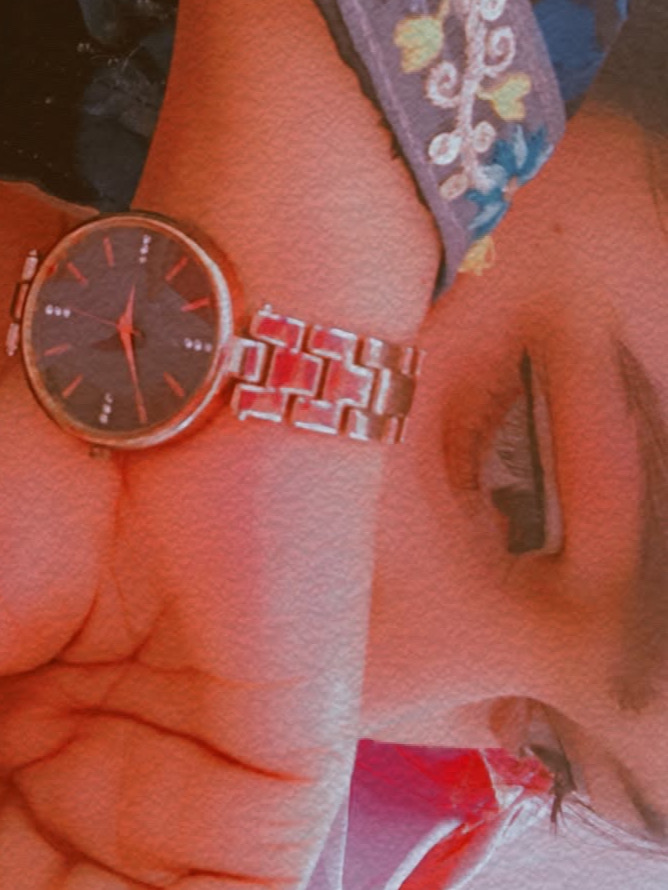

Hello, to main ek chhote se family ka ladka hoon. Padhai complete karke job bhi ki, lekin job chhod di kyunki us kaam me dil nahi lagta tha. Mere ghar me zyada log nahi hain, sirf 6 log hain. Main thoda mentally disturb ho jata hoon, mujhe bahut jaldi gussa aa jata hoon aur kisi bhi baat ka bura bhi jaldi maan jata hoon. Isliye meri ghar walon se zyada banti nahi hai. Mujhe lagta hai aisa hone ka karan bhi mere ghar wale hi hain, kyunki jab main 6–7 saal ka tha tab se mujhe ghar walon ka pyaar kabhi nahi mila. Main kabhi kisi tyohar me khush nahi raha. Khush kaise hota? Tyohar ke time par bhi mere ghar wale mujhse pyaar se baat nahi karte the, aur abhi bhi nahi karte.
Isliye main kaafi akela rehta tha. Mere paas ek Samsung J5 Prime phone tha, us zamane me latest model tha. Usme main sirf videos dekhta tha. 4G internet tha, data khatam ho jata tha to phir recharge kar leta tha. Ghar walon ne pyaar nahi diya, lekin paisa hamesha diya udane ke liye. Mere paas paise hote the, isliye recharge kar liya karta tha. Ek din main cartoon dekh raha tha, tab Free Fire game ka ad aaya. Maine download kiya aur khelna start kiya. Mujhe personally bahut achha laga aur main usme busy rehne laga. Kuch dino baad PUBG Mobile aayi aur maine wo khelna start kiya.
Kuch saal aise hi beet gaye. Tab mujhe yaad aaya ki meri ek girlfriend bhi thi — Sabina. Game par wapas aate hain. Pata nahi kiski nazar lag gayi PUBG par aur wo ban ho gaya. Pura ek saal maine game nahi khela. Ek saal baad BGMI aaya aur maine phir se start kiya. 2–3 saal pehle mujhe ek friend mila jo offline friend tha. Uske shop par ek banda aata tha jisne 1v1 challenge diya. Maine uske saath rooms khele aur zyada matches jeeta. Usne mujhe “sir” bola — pehli baar kisi ne mujhe itni respect di. Uska naam Safi (BROKEN) hai. Maine use game sikhaya, wo mujhe guru maanta hai.
Phir usne mujhe apne friend DEVIL GAUTAM se milwaya. Hum dost ban gaye. Main apna dard batata tha, wo apna dard batate the. Hum roz mazaak karte the. Main pehle gaali nahi deta tha, lekin in logon ke saath rehkar gaali dene laga. Sangat ka asar pad gaya. Phir ek aur friend mila — Stark OP. Wo 36 saal ka tha, mujhe respect karta tha. Phir dosti me third person aa gaya aur sab badal gaya. Mujhe bahut bada jhatka laga, kyunki main already Sabina ke cheating se toot chuka tha. Us din meri duniya hil gayi. Main bilkul toot chuka tha… andar se khali ho gaya tha.
Aur phir meri life me tum aayi. Tumne mujhe accept kiya, support kiya aur samjhaya ki sachcha pyaar chehre se nahi dil se hota hai. Hum roz ladte hain, block karte hain, phir baat karte hain. Tum gussa hoti ho to meri saanse ruk jati hain, tum has deti ho to mera pura din ban jata hai. Tum meri aadat, meri zarurat aur meri duniya ban chuki ho. Jaan, I love you ❤️ Kabhi mujhe chhod kar mat jaana. Tum ho to main hoon. Tum ho to meri duniya hai. Tum ho to sab kuch hai 💖